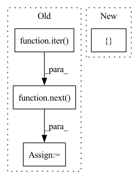

Pattern ID :21470
Before Change
)
// Extract xvectors from a validation sample
valid_x, valid_y = next( iter( valid_set.get_dataloader()))
print("Extracting Xvector from a sample validation batch!")
xvectors = ext_brain.extract(valid_x)
print("Extracted Xvector.Shape: ", xvectors.shape)
After Change
dset.add_dynamic_item(
"spk_id_enc", encoder.encode_sequence_torch, "spk_id"
)
dset.set_output_keys([ "id", "wav", "spk_id_enc"In pattern: SUPERPATTERN
Frequency: 4
Non-data size: 4
Instances Fragment ID: 68791753
Project Name: speechbrain/speechbrain
Commit Name: d656bc6618227a593465ff1a507ec955172eb4ac
Time: 2020-12-20
Author: aku.rouhe@aalto.fi
File Name: recipes/minimal_examples/neural_networks/Xvector/example_xvector_experiment.py
M Class Name: AnonimousClass
N Class Name: AnonimousClass
M Method Name: main(0)
N Method Name: main(0)
M Parent Class:
N Parent Class:
M File Name: recipes/minimal_examples/neural_networks/Xvector/example_xvector_experiment.py
N File Name: recipes/minimal_examples/neural_networks/Xvector/example_xvector_experiment.py
M Start Line: 91
M End Line: 106
N Start Line: 84
N End Line: 120
Before Change
data_loader = DataLoader(
train_dataset, batch_size=h, shuffle=True
)
rm_add = next( iter( data_loader))
rm_add = TensorDataset(rm_add[0], rm_add[1])
self.update_namespace(rm_add=rm_add)
if step_id > 0:After Change
// We recover it using the random_split method and getting rid of the
// second split.
rm_add, _ = random_split(
train_dataset, [ h, len(train_dataset) - h Fragment ID: 68791739
Project Name: continualai/avalanche
Commit Name: a82ae8ee167fda3e9b2ef2c1b6108a4b37742942
Time: 2020-10-19
Author: vincenzo.lomonaco@unibo.it
File Name: avalanche/training/plugins/replay_plugin.py
M Class Name: ReplayPlugin
N Class Name: ReplayPlugin
M Method Name: adapt_train_dataset(4)
N Method Name: adapt_train_dataset(4)
M Parent Class: StrategySkeleton
N Parent Class: StrategySkeleton
M File Name: avalanche/training/plugins/replay_plugin.py
N File Name: avalanche/training/plugins/replay_plugin.py
M Start Line: 61
M End Line: 65
N Start Line: 56
N End Line: 64
Before Change
train_dataloader = DataLoader(
train_data_set, batch_size=64, shuffle=True)
sample = next( iter( train_dataloader))
print(f"Feature batch shape: {sample["image"].size()}")
print(f"Labels batch shape: {sample["label"].size()}")
img = sample["image"][0].squeeze()
label = sample["label"][0]
// plt.imshow(img.numpy().astype(np.uint8), cmap="gray")
// plt.savefig("test_tmp.png")After Change
train_packet_set, batch_size=1, shuffle=True)
packet_sample = next(iter(packet_loader))
plt.plot(np.mean(np.reshape(packet_sample["image"][0].cpu().numpy(), [ 64, -1 Fragment ID: 68791755
Project Name: gan-police/frequency-forensics
Commit Name: 4134e836d0bfb2595a2c0e859a068e6c6c3ad695
Time: 2021-05-07
Author: wolter@cs.uni-bonn.de
File Name: src/freqdect/data_loader.py
M Class Name: AnonimousClass
N Class Name: AnonimousClass
M Method Name: main(0)
N Method Name: main(0)
M Parent Class:
N Parent Class:
M File Name: src/freqdect/data_loader.py
N File Name: src/freqdect/data_loader.py
M Start Line: 41
M End Line: 74
N Start Line: 39
N End Line: 93
Before Change
loader = self.dataset.get_dataloader(mode="train", batch_size=self.reflect_num, classes=[self.target_class],
shuffle=True, num_workers=0, pin_memory=False)
self.reflect_set, self.reflect_labels = next( iter( loader)) // _images, _labels = next(iter(loader))
self.W = torch.zeros(reflect_num)
self.trainset = self.dataset.get_dataset(mode="train")After Change
def __init__(self, candidate_num: int = 100, m: int = 20, selection_iter: int = 10, inner_epoch: int = 1, **kwargs):
super().__init__(**kwargs)
self.param_list["reflection"] = [ "candidate_num", "selection_iter", "m", "inner_epoch" Fragment ID: 68791743
Project Name: ain-soph/trojanzoo
Commit Name: 3b0c9ae8b0af03ee032185c658a6eaed04bc141b
Time: 2020-09-03
Author: ain-soph@live.com
File Name: trojanzoo/attack/backdoor/reflection_backdoor.py
M Class Name: Reflection_Backdoor
N Class Name: Reflection_Backdoor
M Method Name: __init__(5)
N Method Name: __init__(4)
M Parent Class: BadNet
N Parent Class: BadNet
M File Name: trojanzoo/attack/backdoor/reflection_backdoor.py
N File Name: trojanzoo/attack/backdoor/reflection_backdoor.py
M Start Line: 28
M End Line: 52
N Start Line: 19
N End Line: 25